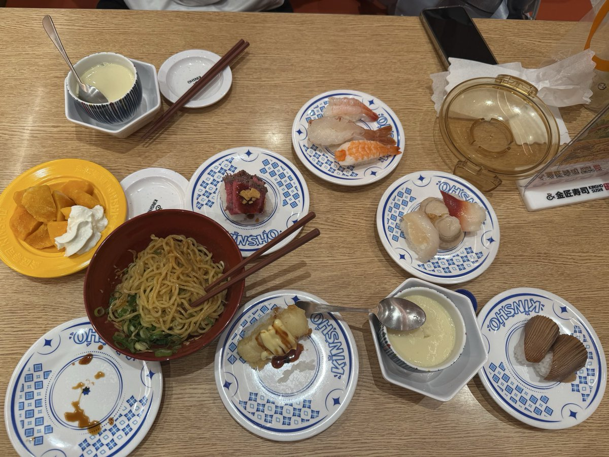
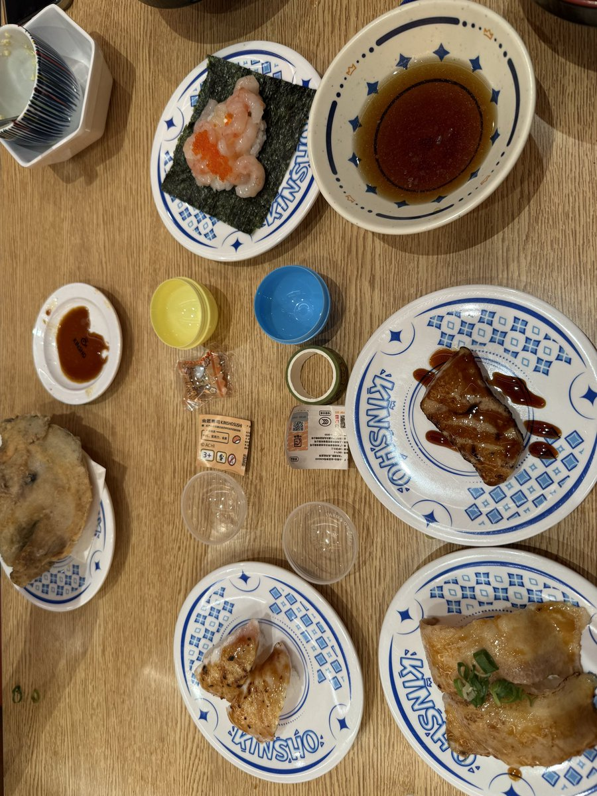

mortis
@0Yowlry
@Liver_MST @Xiaochen520qwq （


Livermst
@Liver_MST
Day 19 嘉兴
今天继续面基朋友，一早就出发来到了嘉兴。
今天是我第一次尝试金匠寿司，个人感觉熟食绝大多数超过了滨，一些单品（比如塔塔）的调味我非常喜欢。生食的食材质量确实比不上郎，但性价比还可以，感觉还会去吃第二次。
吃完后又去打了舞萌，可惜一直性歌，还试了下舞立方，打的我手好痛。 https://t.co/bCxaAnfFcS